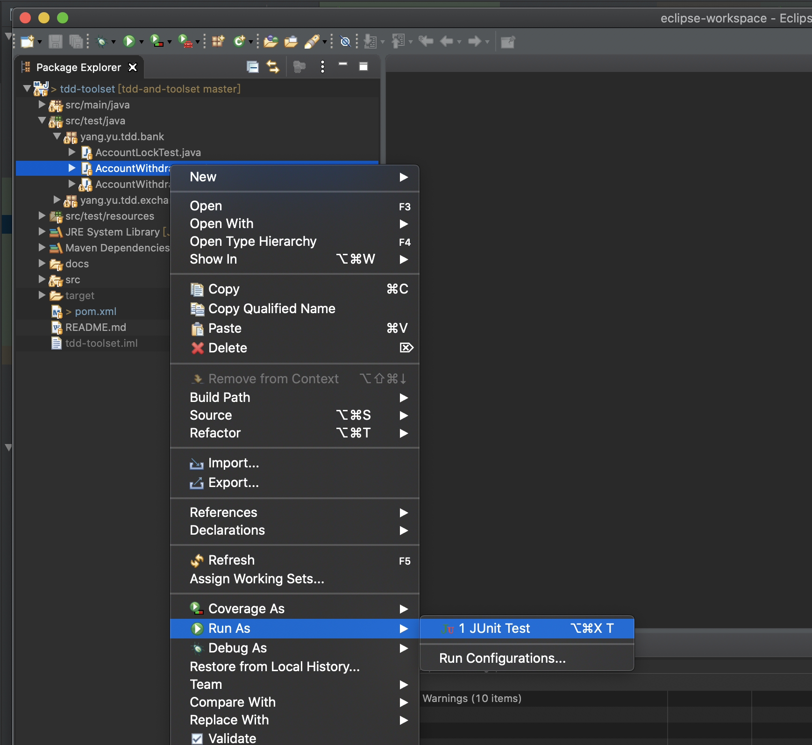

JUnit 概述
JUnit是事实上的Java测试框架标准。至今JUnit已经发布了第5个版本。与以前的版本相比，JUnit5作出了大量的改进。本教程也是以版本5为基准介绍JUnit的使用。
JUnit 5需要JDK 8.0以上版本。
1. JUnit 5的组成
JUnit 5 = JUnit Platform + JUnit Jupiter + JUnit Vintage
JUnit 5主要由三大部分组成：
- JUnit Platform：为在JVM上启动测试框架提供基础。它还定义了TestEngine API, 用来开发在平台上运行的测试框架。此外，该平台还提供了一个用于从命令行启动该平台的控制台启动器和一个基于JUnit 4的运行器，用于在基于JUnit 4的环境中在该平台上运行任何TestEngine。它也为流行的IDE（IntelliJ IDEA、Eclipse、NetBeans、Visual Studio Code等）和构建工具（Gradle、Maven、Ant等）提供了一级的支持。
- JUnit Jupiter：是在JUnit 5中编写测试和扩展的新型编程模型[扩展模型的组合。Jupiter子项目提供了用于在平台上运行基于Jupiter的测试的
TestEngine。 - JUnit Vintage：提供用于在平台上运行基于JUnit 3和JUnit 4的测试的
TestEngine。
如果我们不需要和JUnit版本3或者4兼容，就不需要JUnit Vintage。
下面是JUnit 5的模块依赖关系图：

2. 测试类与测试方法
测试类是同时符合下述条件的类：
- 至少包含一个
测试方法。 - 是顶层类、静态成员类或标记为@Nested的成员类。
- 不是抽象类。
- 不是private类。
- 只有一个构造函数。构造函数一般没有参数。特殊情况下有参数（后面的章节会谈到这个）。
测试方法是同时符合下述条件的方法：
- 被注解或元注解为@Test
,@RepeatedTest,@ParameterizedTest,@TestFactory, @TestTemplate之一。 - 是实例方法，不是静态方法。
- 不是抽象方法。
- 不是private方法。
- 没有返回值。
- 一般没有参数。特殊情况下有参数（后面的章节会谈到这个）。
- 可以抛出任何异常。
测试类可以从超类或接口上继承测试方法。
3. 测试实例生命周期
JUnit测试实例生命周期有两种：
PER_METHOD
这是JUnit默认的生命周期。具体来说，就是在执行测试时为测试类中的每个测试方法单独创建测试类的实例，执行测试方法后销毁这个测试类实例，重新创建一个新的测试类实例来执行余下的测试方法。
PER_CLASS
在PER_CLASS模式下，JUnit在执行测试时创建一个测试类实例，在这个实例上执行所有的测试方法。
一般情况下应该采用采用PER_METHOD生命周期，因为它的隔离性更好（测试方法之间不会相互影响）。如果采用PER_CLASS生命周期，一个测试的执行可能更改测试类的内部状态（修改了字段值），从而影响了后面的测试的先决条件。
PER_CLASS模式比默认的PER_METHOD模式有一些额外的好处。具体来说，使用PER_CLASS模式，可以在非静态方法和接口默认方法上声明@BeforeAll和@AfterAll。因此，”per-class”模式也可以在@Nested测试类中使用@BeforeAll和@AfterAll方法。
要设定PER_CLASS生命周期，有两种可行方式：
对测试类加入@TestInstance(Lifecycle.PER_CLASS)注解。这种方式只影响当前测试类。
修改junit-platform.properties全局配置文件，加入下面的内容：
junit.jupiter.testinstance.lifecycle.default = per_class这种方式将影响整个测试计划中的所有测试类。
如果既有注解，又有全局配置，则以注解为优先。
4. JUnit全局配置
可以在测试类路径根目录下创建一个junit-platform.properties文本文件，用来定义JUnit平台的默认配置。在Maven和Gradle项目中，这个文件的位置通常是：
src/test/resources/junit-platform.properties
具体的配置选项在后面的章节中讲述。
5. 注解（Annotations）
JUnit是由Annotation驱动的。编写测试的时候，通常只需要使用JUnit定义的Annotation来注解测试类、方法、字段和参数，不需要继承JUnit特定的超类，也不需要实现JUnit特定的接口。多数情况下，也不需要使用JUnit定义的类和接口。
5.1 核心注解
JUnit Jupiter支持下列注解，用于配置测试和扩展框架。
除非特别说明，所有核心注解位于junit-jupiter-api模块中的org.junit.jupiter.api包中。
| 注解 | 说明 |
|---|---|
@Test |
表示方法是测试方法。与JUnit4的@Test注解不同的是，这个注解没有声明任何属性，因为JUnit Jupiter中的测试扩展是基于他们自己的专用注解来操作的。除非被覆盖，否则这些方法可以继承。 |
@ParameterizedTest |
表示方法是参数化测试。 除非被覆盖，否则这些方法可以继承。 |
@RepeatedTest |
表示方法是用于重复测试的测试模板。除非被覆盖，否则这些方法可以继承。 |
@TestFactory |
表示方法是用于动态测试的测试工厂。除非被覆盖，否则这些方法可以继承。 |
@TestTemplate |
表示方法是测试用例的模板，设计为被调用多次，调用次数取决于自注册的提供者返回的调用上下文。除非被覆盖，否则这些方法可以继承。 |
@TestMethodOrder |
用于为被注解的测试类配置测试方法执行顺序，类似于JUnit 4的@FixMethodOrder注解。 |
@TestInstance |
用于为被注解的测试类配置测试实例生命周期。 这个注解可以继承。 |
@DisplayName |
声明测试类或测试方法的自定义显示名称。这个注解不被继承。 |
@DisplayNameGeneration |
为测试类生命一个定制的显示名生成器。这个注解可以继承。 |
@BeforeEach |
表示被注解的方法应在当前类的每个@Test，@RepeatedTest，@ParameterizedTest或@TestFactory方法之前执行; 类似于JUnit 4的@Before。 除非被覆盖，否则这些方法可以继承。 |
@AfterEach |
表示被注解的方法应在当前类的每个@Test，@RepeatedTest，@ParameterizedTest或@TestFactory方法之后执行; 类似于JUnit 4的@After。 除非被覆盖，否则这些方法可以继承。 |
@BeforeAll |
表示被注解的方法应该在当前类的所有@Test，@RepeatedTest，@ParameterizedTest和@TestFactory方法之前执行; 类似于JUnit 4的@BeforeClass。 这样的方法可以继承（除非被隐藏或覆盖），并且必须是静态的（除非使用“per-class”测试实例生命周期）。 |
@AfterAll |
表示被注解的方法应该在当前类的所有@Test，@RepeatedTest，@ParameterizedTest和@TestFactory方法之后执行; 类似于JUnit 4的@AfterClass。 这样的方法可以继承（除非被隐藏或覆盖），并且必须是静态的（除非使用“per-class”测试实例生命周期）。 |
@Nested |
表示被注解的类是一个嵌套的非静态测试类。除非使用“per-class”测试实例生命周期，否则@BeforeAll和@AfterAll方法不能直接在@Nested测试类中使用。 这个注解不能继承。 |
@Tag |
在类或方法级别声明标签，用于过滤测试; 类似于TestNG中的test group或JUnit 4中的Categories。这个注释可以在类级别上继承，但不能在方法级别上继承。 |
@Disabled |
用于禁用测试类或测试方法; 类似于JUnit4的@Ignore。这个注解不能继承。 |
@Timeout |
用于使测试方法、测试工厂、测试模板或生命周期方法在执行超过指定的时间时失败。 |
@ExtendWith |
用于注册自定义扩展。 这个注解可以继承。 |
@RegisterExtension |
用于通过类字段编程式注册扩展。这样的字段可以被继承，除非它们被屏蔽了。 |
@TempDir |
用于提供临时目录，通过字段注入或者测试方法、生命周期方法的参数注入。位于org.junit.jupiter.api.io 包. |
5.2 元注解（Meta-Annotations）与组合注解（Composed Annotations）
JUnit的注解可以作为元注解使用，这意味着你可以使JUnit的注解定义自己的组合注解，它们自动继承它们的元注解的语义。
例如，您可以像下面那样创建一个名为@Fast的自定义组合注释，而不必在整个代码库（请参阅标签和过滤）中复制和粘贴@Tag("fast")。然后@Fast可以用作@Tag("fast")的一个替代品。
import java.lang.annotation.ElementType;
import java.lang.annotation.Retention;
import java.lang.annotation.RetentionPolicy;
import java.lang.annotation.Target;
import org.junit.jupiter.api.Tag;
@Target({ ElementType.TYPE, ElementType.METHOD })
@Retention(RetentionPolicy.RUNTIME)
@Tag("fast")
public @interface Fast {
}
下面的测试方法显示如何使用@Fast注解：
@Fast
@Test
void myFastTest() {
// ...
}
标记了@Fast注解的测试方法，等价于标记了@Tag("fast")注解。
你甚至可以定义一个同时用@Tag("fast")和@Test注解的@FastTest组合注解，用来在测试方法中取代上述两个注解：
import java.lang.annotation.ElementType;
import java.lang.annotation.Retention;
import java.lang.annotation.RetentionPolicy;
import java.lang.annotation.Target;
import org.junit.jupiter.api.Tag;
import org.junit.jupiter.api.Test;
@Target(ElementType.METHOD)
@Retention(RetentionPolicy.RUNTIME)
@Tag("fast")
@Test
public @interface FastTest {
}
JUnit自动识别下面的测试方法为@Test和@Tag("fast")：
@FastTest
void myFastTest() {
// ...
}
6. 运行测试
如何运行测试在后面的章节中有具体表述。在各种IDE中通常都支持针对测试类鼠标右键弹出的上下文菜单中执行单元测试。下面是在IntelliJ IDEA中的图示：

下面是Eclipse中的图示：
